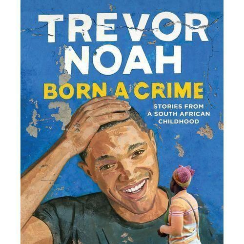
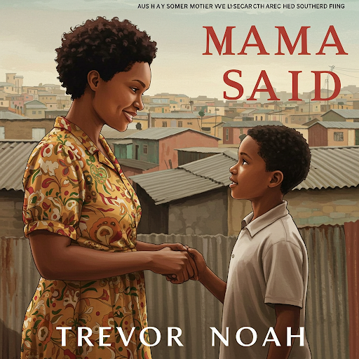

"You separate people from
their humanity when
you separate them
from their language"
Inspired By
Trevor Noah, Born a Crime
Born a Crime
 "I was born a crime. When you tell people you were born a crime, they think you are exaggerating, but it's true. My existence was illegal. My mother was black and my father was white, and South Africa's immorality Act made it illegal for them to have children together. If the police had caught my mother and father together, they would go to jail"Trevor's "Born a Crime"- a title as stark and impactful as the realities it unveils. But what if we looked at his journey with a different lens? Since I have been given the honor of bestowing a new title to this great memoir, I propose :
"Mama Said"
join me as I explore why this alternative title resonates well with and reflects the enduring power of the original.
"My mother raised me as if there were no limitations on where I could go or what I could do. When I look back I realize she raised me like a white kid not intentionally, but just by teaching me thoughts and feelings mattered, that I deserved to be heard"
The excerpt above beautifully captures the unwavering belief and guidance of Trevor Noah's mother, Patricia Nombuyiselo. Her voice, her lessons and her strong spirit are a constant guide throughout "Born a Crime" Trevor once said that the first thing his mom taught him was to think for himself and that is why he questions everything. Isn't that just so evident? Trevor questions the illogicality of the political system, He questions the concept of christianity, relationships, racism and apartheid. Trevor questions everything! This shows the powering force that his mother had in shaping his destiny.
Reading Noah's memoir, I am struck by the constant presence and wisdom of his mother. Her voice echoes through his sad and humorous experiences guiding him in understanding the complex world he lives in. His mother teaches him a lot about self-freedom which has made Trevor what he is today, through stand-up comedy and daily TV shows he gets to connect and share with the world on a personal level without fear of judgement or insecurity.
The Paradox of Possession: Reflective Blog
"Abel wanted a traditional marriage with a traditional wife, but he never fell in love with subservient women. He only wanted a woman who is free because his dream was to put her in a cage"This quote is unsettling to one's heart. This is depicted in Trevor's "Born a Crime" through the complex and ultimately abusive love relationship between his mother, Patricia, and his stepfather, Abel. Their love lies in a confusing paradox with the desire for independence but also the urge to control it. Reflecting on this reveals uncomfortable truths about power, insecurity and the confusing ways in which love can manifest.
Resonance with modern society
The illusion of the "Strong, Independent Partner
Even today, there usually is an initial attraction to a partner perceived as strong, independent and "free-minded". However, this admiration mostly masks an underlying insecurity or a desire to ultimately control that very independence you were once attracted to. I know of a couple that was super devoted to family but couldn't just stand having both of them being breadwinners of their family!The modern relationship within today's societal expectations leans towards egalitarianism where partners are seen more as equals and mutual respect for one's independence is encouraged.